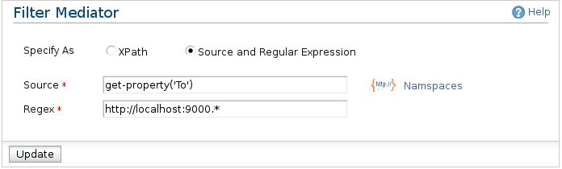

Filter Mediator
The filter mediator either test the given xpath expression as a boolean expression, or match the evaluation
result of a source xpath expression as a String against the given regular expression. If the test succeeds,
the filter mediator will execute the enclosed mediators in sequence.

Here are the configuration options related to Filter Mediator.
-
Specify As: Specify whether you give the condition as an XPath or a Regular expression.
-
XPath: XPath expression if you selected the "Specify As" option to "XPath". Note that you can define the
namespaces used in the xpath by clicking the "Namespaces" link
-
Source: XPath expression to locate the value which is going match with the reguilar expression that you can define below.
-
Regex: Regular expression to match with the source value.